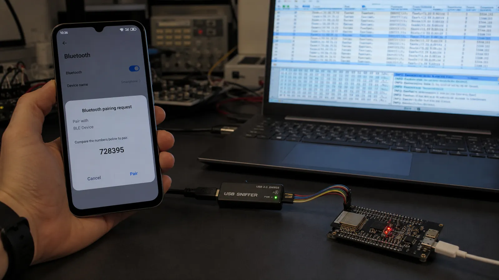

روشنکردن Pairing بهتنهایی محصول را امن نمیکند. امنیت از تحلیل تهدید، قابلیت ورودی و خروجی دو دستگاه، سطح دسترسی Characteristicها، نگهداری کلید و سیاست بازیابی محصول ساخته میشود.
Pairing فرایند ساخت یا توافق مواد کلیدی است. Encryption با همان کلیدها لینک را محرمانه میکند. Bonding یعنی کلیدها برای اتصالهای آینده ذخیره شوند. ممکن است اتصال رمز شود ولی Bond باقی نماند، یا دستگاه Bond شده باشد و در اتصال فعلی هنوز Encryption فعال نشده باشد.
Just Works تعامل کمی دارد اما در برابر حمله مرد میانی احراز هویت قوی نمیدهد. Passkey Entry به نمایشگر یا ورودی عدد نیاز دارد. Numeric Comparison در LE Secure Connections عدد مشترک را روی دو دستگاه نشان میدهد. OOB داده امنیتی را از کانال دیگری مثل NFC منتقل میکند. قابلیت IO و مدل تهدید روش مناسب را تعیین میکنند.
LTK برای رمزنگاری لینک، IRK برای شناسایی Resolvable Private Address و CSRK برای امضای داده در سناریوهای مرتبط استفاده میشود. کلید باید در حافظه مناسب، با کنترل دسترسی و چرخه حذف روشن نگهداری شود. Factory Reset باید Bondها را طبق انتظار کاربر پاک کند.
آدرس ثابت دستگاه ردیابی طولانیمدت را آسان میکند. Resolvable Private Address بهطور دورهای تغییر میکند و دستگاه Bond شده با IRK میتواند آن را Resolve کند. Random Address ناشناس به معنی امنبودن داده نیست؛ حریم خصوصی آدرس و Encryption دو مسئله جدا هستند.
برای قفل، Just Works کافی نیست. Numeric Comparison یا OOB را در نظر بگیرید، دستورات بازکردن را فقط روی لینک رمز و احرازشده مجاز کنید، تلاش ناموفق را محدود کنید و Bond حذفشده را از هر دو سمت پاک کنید. سپس سناریوی گوشی گمشده را هم طراحی کنید.